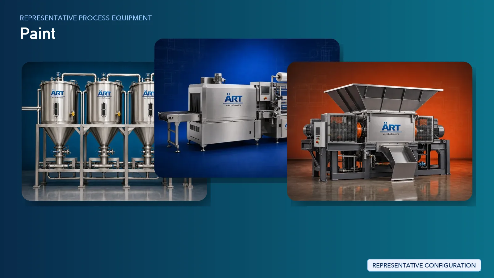

Paint Manufacturing Plant & Machinery Solutions (Wall Paint, Emulsion & Industrial Coatings)
Paint manufacturing is a major segment in the global chemical and construction industry, producing products such as wall paints, emulsion paints, primers, distempers, enamels, and industrial coatings. These products are widely used in residential, commercial, and industrial applications.

About Paint Manufacturing Plant & Machinery Solutions processing
The manufacturing process requires precise formulation, pigment dispersion, controlled mixing, viscosity management, and color accuracy to ensure consistent quality, durability, and finish.
ART Mechatronics provides complete turnkey solutions for paint manufacturing plants, offering advanced systems for mixing, grinding, dispersion, filtration, tinting, and packaging. Our solutions are designed for high-efficiency production, consistent color quality, and scalable operations for domestic and global markets.
Complete Paint Process Flow
Raw materials such as pigments, binders, solvents, resins, and additives are received and stored.
Ensures safe and controlled storage.
Raw materials are measured and pre-mixed.
Ensures:
- Proper wetting of pigments
- Initial dispersion
Pigments are ground to fine particle size.
Ensures:
- Fine dispersion
- Smooth finish
- Viscosity
- Final formulation
Paint is filtered to remove impurities.
Ensures:
- Smooth and defect-free product
Colorants are added to achieve desired shades.
Ensures accurate color matching.
Paint is tested for:
Finished paint is stored before packaging.
Suitable for:
- Retail containers
- Industrial drums
Types of Paints Produced
- Emulsion Paint (Interior & Exterior)
- Distemper
- Primer
- Enamel Paint
- Industrial Coatings
- Waterproofing Coatings
Machinery Required for Paint Manufacturing Plant
- Storage Tanks / Silos
- Dosing System
- High-Speed Disperser
- Bead Mill / Sand Mill
- Mixing Tank
- Filtration System
- Tinting Machine
- Storage Tanks
- Filling & Packaging Machines
Turnkey Paint Plant Solutions
ART Mechatronics offers complete turnkey solutions for paint manufacturing plants, including:
- Process design & plant layout
- Mixing and dispersion systems
- Grinding and milling systems
- Tinting and packaging systems
- Automation & control panels
- Installation & commissioning
- After-sales support
We customize solutions based on:
- Paint type
- Production capacity
- Automation level
- Packaging format
Why Choose Art Mechatronics
- Expertise in chemical and coating processing systems
- Advanced dispersion and grinding technology
- Precision color formulation capability
- Energy-efficient plant design
- Consistent product quality
- Global export capability
Machinery in a Paint Manufacturing Plant & Machinery Solutions plant
Where it's used
Get pricing & specs for the Paint Manufacturing Plant & Machinery Solutions plant
Share the product, target capacity, current process and plant location. These details help our engineers discuss the right machine or line configuration.
One partner, from design to start-up
ART Mechatronics designs, manufactures, installs and commissions your Paint Manufacturing Plant & Machinery Solutions solution with regional presence in India, UAE and Thailand.